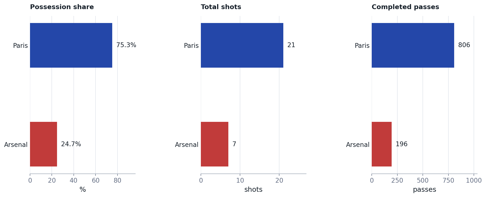
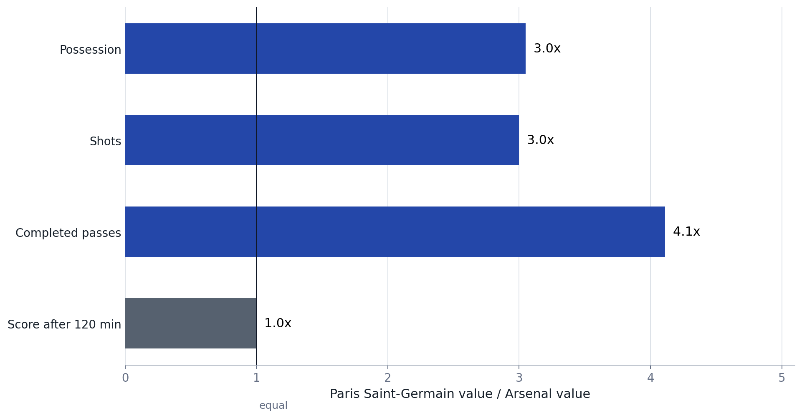
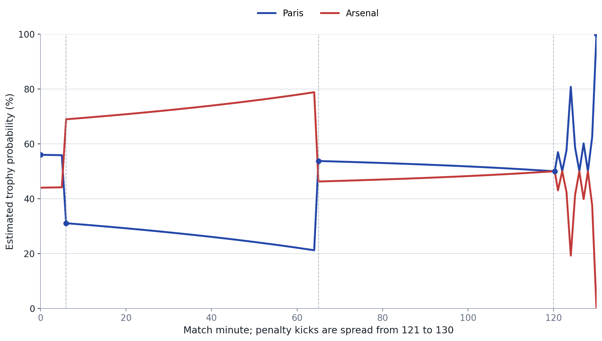
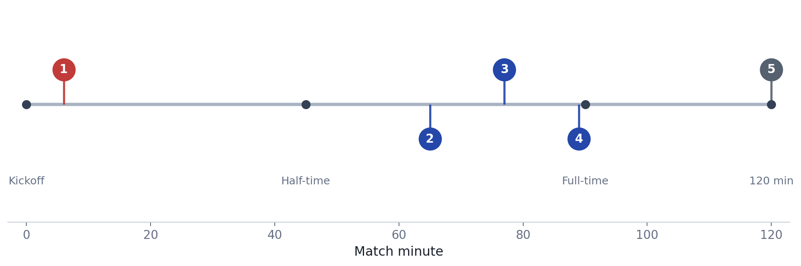
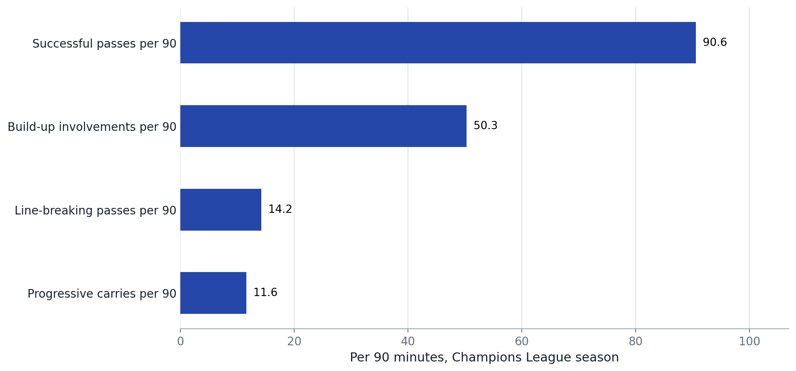
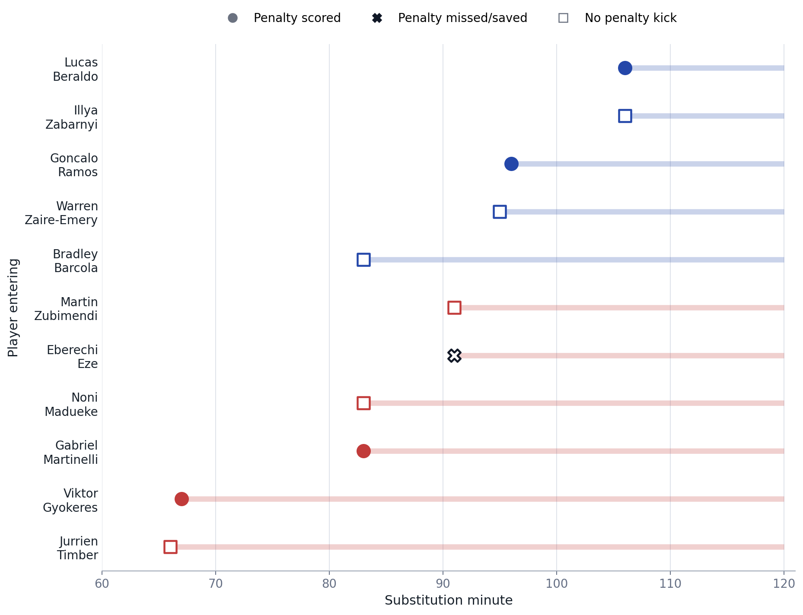
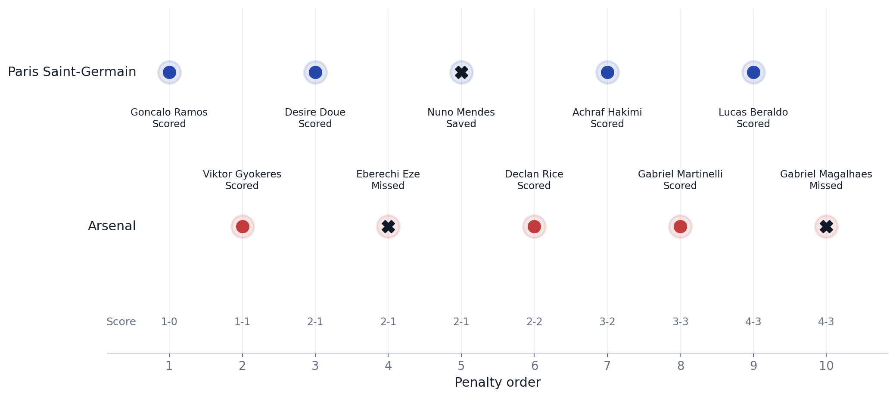

UEFA Champions League Final 2026 Match Control Analysis
Paris Saint-Germain and Arsenal finished 1-1 after extra time on May 30, 2026, before Paris won the penalty shootout 4-3. The data story is not just who won. It is how much match control Paris had before the scoreboard still stayed level for 120 minutes.
Background
The Union of European Football Associations (UEFA) match report records the final as Paris Saint-Germain 1-1 Arsenal after extra time, with Paris winning 4-3 on penalties at the Puskas Arena in Budapest. Arsenal led through Kai Havertz in the sixth minute. Paris equalized through an Ousmane Dembele penalty in the 65th minute.
Purpose
This analysis separates match control from match outcome. The goal is to show, in a few readable figures, how a final can be statistically one-sided in possession, shots, and passing volume, while still being decided by one kick in a shootout.
Method
The project uses small, source-cited tables rather than storing a heavy raw feed. Match outcome, key events, substitutions, and Player of the Match context come from UEFA. Control indicators come from public Opta-derived reporting: Arsenal's 24.7% possession figure, Paris' 21-7 shot advantage, and the 806-196 completed-pass comparison. Paris' possession share is inferred as 100% minus Arsenal's reported share.
The win-probability curve is a simple model, not an official live feed. It starts from an Opta pre-match forecast of 56% for Paris, uses a Poisson score-state model to 120 minutes, and treats a tied match after extra time as a 50/50 shootout before applying the actual penalty sequence with a neutral 75% conversion assumption for remaining kicks.
Results
| Metric | Paris Saint-Germain | Arsenal | Paris / Arsenal | Source |
|---|---|---|---|---|
| Possession share | 75.3% | 24.7% | 3.05x | Opta Analyst / OptaJoe |
| Total shots | 21 | 7 | 3.00x | Opta Analyst |
| Completed passes | 806 | 196 | 4.11x | Sports Illustrated summary of match statistics |
| Goals after extra time | 1 | 1 | 1.00x | UEFA official match report |







Event Key
| # | Minute | Phase | Team | Event | Score |
|---|---|---|---|---|---|
| 1 | 6 | First half | Arsenal | Kai Havertz goal | Paris 0-1 Arsenal |
| 2 | 65 | Second half | Paris Saint-Germain | Ousmane Dembele penalty | Paris 1-1 Arsenal |
| 3 | 77 | Second half | Paris Saint-Germain | Kvaratskhelia effort deflects onto post | Paris 1-1 Arsenal |
| 4 | 89 | Second half | Paris Saint-Germain | Vitinha late chance | Paris 1-1 Arsenal |
| 5 | 120 | After extra time | Both | Level after extra time | Paris 1-1 Arsenal |
Win Probability Read
| Point | Paris | Arsenal |
|---|---|---|
| Kickoff | 56.0% | 44.0% |
| After Arsenal goal | 31.0% | 69.0% |
| After Paris equalizer | 53.7% | 46.3% |
| End of normal time | 52.4% | 47.6% |
| After extra time | 50.0% | 50.0% |
| Before shootout | 50.0% | 50.0% |
| Penalty 10: Arsenal Missed | 100.0% | 0.0% |
The model view says Arsenal's early goal mattered more than the aggregate control numbers at that moment. Paris still had the stronger underlying profile, but the clock and score state moved the estimated trophy probability toward Arsenal until the 65th-minute equalizer. Once the match reached penalties at 1-1, the model resets to roughly even before the actual shootout sequence separates the teams.
Vitinha
| Metric | Value | Interpretation |
|---|---|---|
| Official final award | Player of the Match | The Union of European Football Associations technical observer panel singled out his control of the game. |
| Successful passes per 90 | 90.6 | Season-long Champions League passing volume shows why Paris could sustain possession through midfield. |
| Line-breaking passes per 90 | 14.2 | He was not just recycling possession; he repeatedly moved the ball through pressure lines. |
| Build-up involvements per 90 | 50.3 | High build-up involvement fits the final's control profile. |
| Progressive carries per 90 | 11.6 | Ball-carrying gave Paris another way to advance play when passing lanes narrowed. |
| Final event note | 89' chance; off 106' | He remained involved late, then Paris used Lucas Beraldo as a shootout option after substituting him. |
Vitinha's role is the bridge between the team-level data and the player-level story. Paris' control was not only possession for possession's sake. His season profile shows high passing volume, line-breaking passes, build-up involvement, and progressive carries. That makes his Player of the Match selection consistent with the way Paris pinned Arsenal into a low-possession final.
Substitutions
| Team | Minute | Player on | Player off | Penalty role | Contribution note |
|---|---|---|---|---|---|
| Paris Saint-Germain | 83 | Bradley Barcola | Khvicha Kvaratskhelia | No penalty | Fresh wide runner during Paris' late push. |
| Arsenal | 66 | Jurrien Timber | Cristhian Mosquera | No penalty | Defensive substitution before Paris equalized. |
| Arsenal | 67 | Viktor Gyokeres | Martin Odegaard | Scored | Converted Arsenal's first shootout kick. |
| Arsenal | 83 | Gabriel Martinelli | Leandro Trossard | Scored | Converted Arsenal's fourth shootout kick. |
| Arsenal | 83 | Noni Madueke | Bukayo Saka | No penalty | Added a late direct option on the right side. |
| Arsenal | 91 | Eberechi Eze | Kai Havertz | Missed | Missed Arsenal's second shootout kick. |
| Arsenal | 91 | Martin Zubimendi | Myles Lewis-Skelly | No penalty | Extra-time midfield stability. |
| Paris Saint-Germain | 96 | Goncalo Ramos | Ousmane Dembele | Scored | Converted Paris' first shootout kick after entering late. |
| Paris Saint-Germain | 95 | Warren Zaire-Emery | Fabian Ruiz | No penalty | Fresh legs in midfield during extra time. |
| Paris Saint-Germain | 106 | Illya Zabarnyi | Marquinhos | No penalty | Late defensive reset before the shootout. |
| Paris Saint-Germain | 106 | Lucas Beraldo | Vitinha | Scored | Converted Paris' fifth shootout kick. |
The substitutes changed the match less through open-play goals than through the shootout. Paris got converted penalties from late entrants Goncalo Ramos and Lucas Beraldo. Arsenal got converted penalties from Viktor Gyokeres and Gabriel Martinelli, but Eberechi Eze's miss created the first major shootout break toward Paris.
Interpretation
The clearest read is that Paris controlled the match environment, but did not turn that control into scoreboard separation. Arsenal scored early, defended deep, and kept Paris to one goal across normal and extra time. The win-probability model adds the time dimension: control was one-sided in aggregate, but the game state was not stable for Paris until the equalizer.
The completed-pass gap is especially strong: Paris completed more than four passes for every one Arsenal completed. The shot gap is also large, but the 120-minute score stayed 1-1. That tension is the main story for a public data post.
Limitations
- Possession, pass, and shot counts can differ by provider definitions. This report keeps the provider notes visible rather than blending incompatible feeds.
- The win-probability curve is a transparent model from score state and penalty state. It is not a bookmaker probability, an Opta live probability feed, or a tactical simulation.
- This is a descriptive analysis of one final, not a tactical model or player-evaluation model.
- Expected goals and shot locations are not included because the most accessible public xG values were less directly sourceable than the control metrics used here.
Next Steps
- Add shot-location or expected-goals data if a stable public source is available.
- Compare this final with other Champions League finals that reached penalties.
- Build a small benchmark of finals where control metrics and final score diverged sharply.
Sources
- UEFA official match report: Final score, timeline events, substitution list, penalty failures, and player of the match.
- Opta Analyst match report: Shots, possession record, pre-match win probability, first-half pass fact, and Vitinha's Champions League profile.
- Sports Illustrated match-stat summary: Completed-pass comparison and Opta possession note.
- UEFA Player of the Match article: Vitinha official Player of the Match context.
- VG live report: Penalty shootout sequence cross-check.